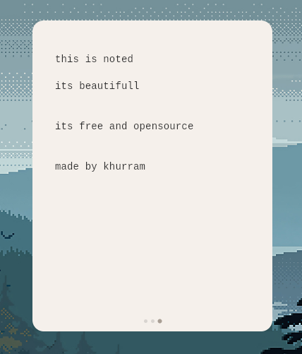
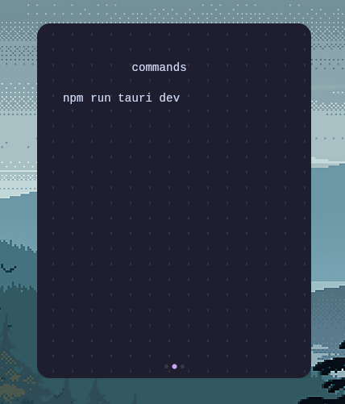
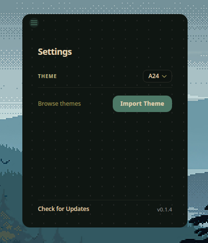

A minimal scratchpad for temporary thoughts. Swipe through notes, switch themes, zero distractions.
Built with Tauri. Tiny binary, instant launch.
Antinote-compatible JSON themes.
Linux and Windows.


